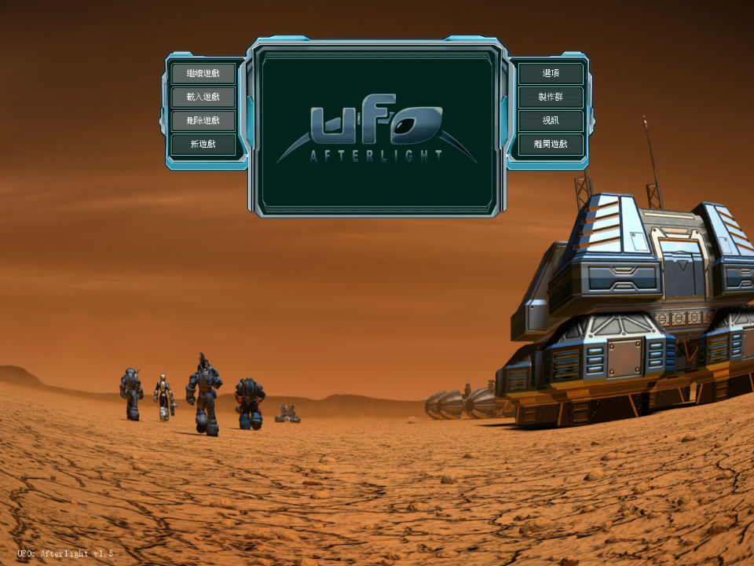
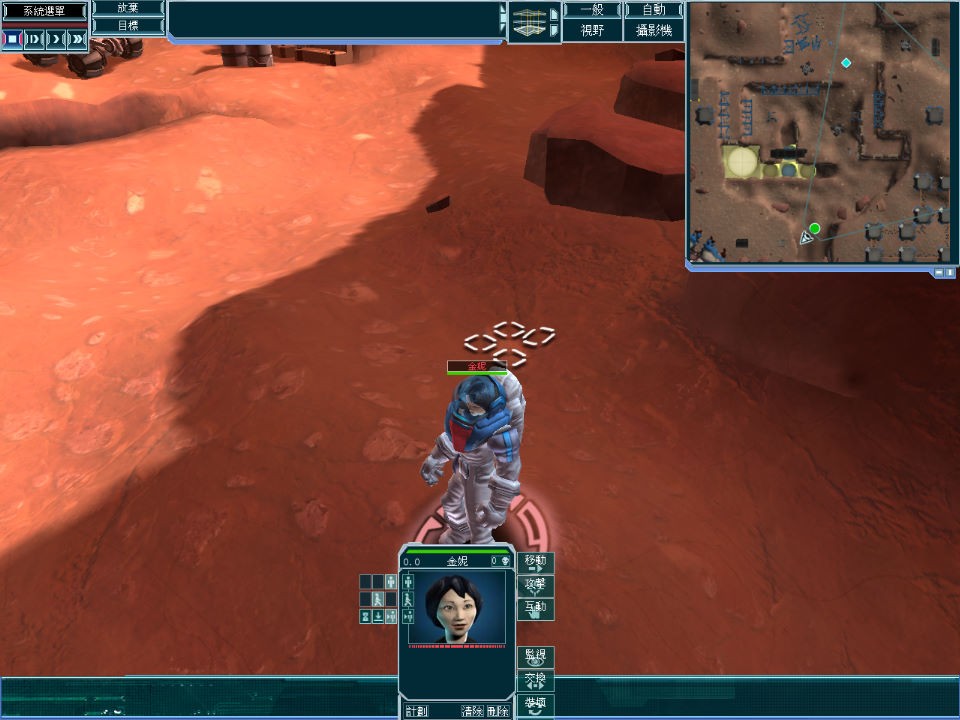
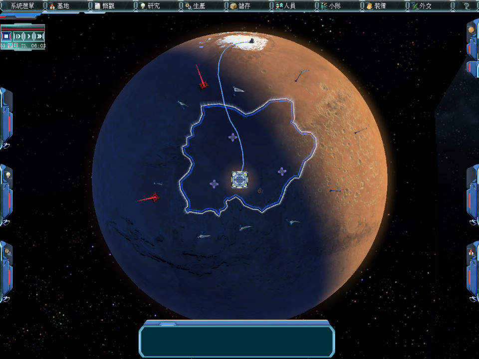

名稱：幽浮：末日餘暉 (UFO: Afterlight，中文版)
簡介：Altar 2007年出品的即時戰略與回合制戰術遊戲，由1C代理發行，台灣由英特衛中文
化並代理發行 [待補]。



保護：光碟SecuROM 7.31，需使用YASU屏蔽工具
備註：繁中版為1.4版。
備註：虛擬機+XP無法執行，請使用Win64實機執行。
備註：遊戲需要安裝OpenAL。
備註：執行檔UFO.exe後面加參數--options fullscreen=false，可採視窗模式執行。
備註：uufo_afterlight_patch_1_5.rar = 1.5更新檔（繁中可用）
nocd14_cht.rar = 繁中1.4免光碟檔
nocd15.rar = 1.5免光碟檔